- 通用
- 默认样式
- 音频
- 显示/视觉选项
- 音频标签
- 视频
- 脚本分辨率
- 界面
- 颜色
- 音频配色方案
- 热键
- 热键组
- 设置热键
- 备份
- 自动保存
- 自动备份
- 自动化
- 高级音频设置
- 缓存
- 频谱模式
- Avisynth (仅限Windows)
- FFmpegSource
- Portaudio
- 高级视频设置
- Avisynth
- FFmpegSource
Aegisub是可高度定制的软件，因而它有大量的选项供用户选择。这些选项都在选项对话框中，您可以在“查看”菜单里找到。这个页面提供可用选项的说明。
Aegisub将所有配置都以纯文本的形式储存在 config.json 文件中，它默认位于?user目录。
如果您想恢复默认设置而不想重装Aegisub的话，您只需把config.json删掉并重启Aegisub即可。
通用
- 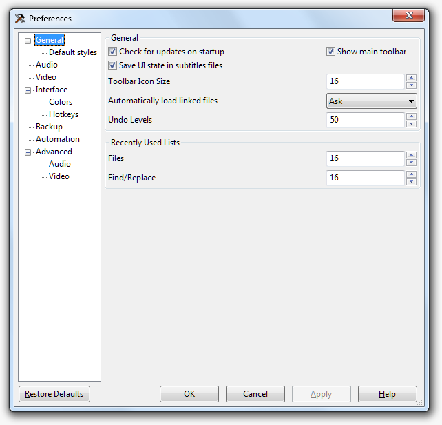
- 自动检查更新
- 如果启用，Aegisub会定期检查是否有新版本可用，如果有就会提醒您。
当然，这需要您的电脑能接入互联网。
- 显示主工具栏
- 如果禁用，Aegisub的主要工具栏会被隐藏。
- 在字幕文件中保存用户界面状态
- 默认情况下，Aegisub会在字幕文件中保存当前滚动到的位置和所选行的编号，以便您在下次打开字幕文件时可以自动恢复到保存时的状态。不过，如果您对您的字幕文件使用版本控制的话，您可能希望关闭这个功能来减少对更改的干扰。
- 工具栏图标大小
- Aegisub所有工具栏的图标的大小。目前有效值仅为16或24。
- 自动载入链接的文件
- 当您保存脚本时，Aegisub同时也在字幕文件里保存了您打开的音视频和时间码文件的信息。
这个选项决定了Aegisub在打开字幕文件时，如何处理这些与字幕文件所关联的文件。如果设为“询问”，Aegisub会在打开文件时让您选择是否加载链接的文件。如果设为“从不”，Aegisub不会加载链接的文件，同样的如果设为“总是”，Aegisub将尝试载入关联的文件（并会在找不到相关文件时弹出错误报告）。
- 恢复操作的最大数量
- 改变撤销的最大数量。这个值越大，Aegisub将占用的内存就越多。
- 最近使用过的列表
- Aegisub的各种最近使用列表记录的项目的最大值。它对内存几乎没有影响，但太长的列表看起来会不方便。
默认样式
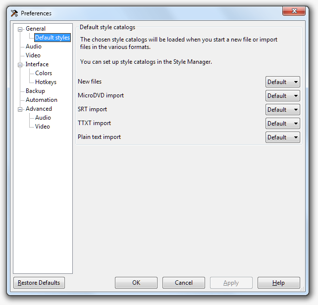
音频
- 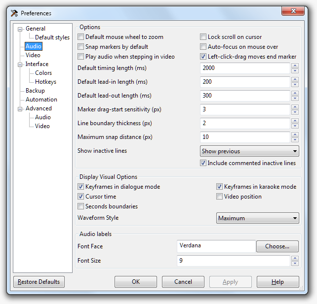
- 锁定光标卷动
- 当启用时，当视频播放光标离音频波形视图左右边缘较近时，波形将自动随着光标滚动。
- 默认紧贴标记
- 当启用时，如果两个音频视图的标记（例如关键帧，其他行的开始结束时间点）离得足够近的话，Aegisub会在您点击或拖动音频标记时，把它们吸附到音频视图的其他标记上。
您可以按住shift再拖动来临时开启或关闭吸附功能。
- 默认使用鼠标滚轮缩放
- 当启用时，鼠标滚轮默认会用来水平缩放频谱视图，按住Ctrl键时滚动频谱视图。如果禁用则相反。
- 随鼠标移动自动定位
- 如果启用，当鼠标光标移动到音频频谱上将会自动激活它（而不需要再单击一下）。
- 在视频步进时播放音频
- 当启用时，视频按帧步进时会播放那帧的音频。
- 默认计时长度
- 新建行的默认持续时间，单位为毫秒。
- 默认提前开始时间长度
- 默认延后结束时间长度
- 使用“开始时间提前”和“结束时间延后”功能所增加的时间长度。同时也可在时间后续处理器里使用和设置。
- 标记拖动灵敏度
- 能够视为拖动的鼠标移动的像素距离。较高的值可以降低误操作的可能，不过响应能力会降低。
- 左键点击拖动动作结束标记
- 当启用时，左键单击频谱的某一位置会设置一行的开始时间点，然后拖动到的地方会设为结束时间点，
使得打一行轴只需简单的单击——拖动就可完成。当禁用时，左键单击并拖动只会设置一行的开始时间，需要再右击来设置结束时间。
- 边线宽度
- 行的开始和结束标记的宽度，单位为像素。
- 最大紧贴标记距离
- 在这个距离内的标记会自动吸附，单位为像素。
- 显示非活动行
- 控制当前行附近的行将如何显示在音频波形视图上。“不显示”将只会显示当前行。“显示前一个”将用灰色显示除当前行的上一行（是字幕栏里的上一行， 不是 按时间顺序）。“显示前一个和下一个”将会用灰色显示当前行的前一行和后一行。“显示全部”将会用灰色显示除当前行之外的所有行。
- 包括非活动注释行
- 如果禁用，注释行将会被跳过，例如“显示前一个”会变成“显示前一个非注释行”。
显示/视觉选项
- 关键帧
- 如果启用，视频关键帧将会在默认情况下以线条的形式标记在音频波形视图上。
- 卡拉OK模式关键帧
- 如果启用，视频关键帧将会在卡拉OK模式下以线条的形式标记在音频波形视图上。
- 显示光标所在的时间
- 如果启用，会在音频波形上方显示出光标所指位置的时间点。
- 显示视频位置
- 如果启用，视频当前帧的开始时间会以线条的形式标记在音频波形视图上。
- 波形样式
- 选择使用何种波形渲染样式
- 最大 + 平均
- 波形会是两个通道，其中一个表示一个像素的时间范围内最大的一个音频样本的值，用较亮的颜色表示，和所有音频样本的平均值。
- 最大
- 波形只显示最大值，和之前的Aegisub版本一样。
音频标签
这些选项控制在音频栏显示的卡拉OK音节的外观。
- 字体
- 音频标签所用的字体。
- 字体大小
- 音频标签的字体大小。
视频
- 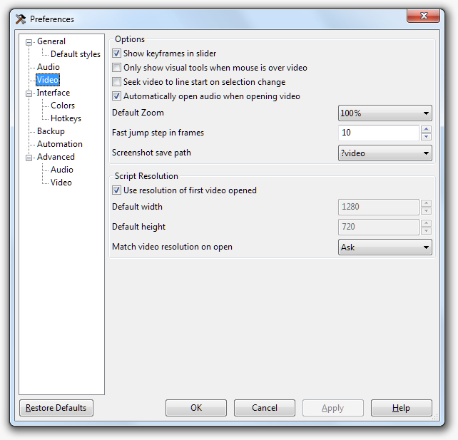
- 在滑动条上显示关键帧
- 当启用时，Aegisub会在视频进度条上显示关键帧。
- 选择的行改变后，视频位置变为所选行的开始时间
- 当启用时，每当所选的行改变后，Aegisub都会自动将视频播放位置移至所选行的第一帧。
注意双击行或者按Ctrl+1也可以实现这个功能。
- 只有当鼠标处在视频上时才显示可视化编辑工具
- 当启用时，可视化编辑工具只有在光标处在视频上时才会显示。
- 打开视频时自动加载音频
- 当启用时，当您打开的视频文件包含音轨，Aegisub将会自动加载音频。
- 默认缩放
- 默认视频缩放级别。当您的屏幕非常大或非常小时很有用。
- 快速步进帧数
- 决定当您使用快速步进功能（Alt+左方向键 和 Alt+有方向键）时一步“跳”多远。以帧为单位。
- 截图保存路径
- 决定Aegisub把截图保存到哪。默认位置是
?video，就是存到视频文件所在的文件夹，但您可以改成您想要的路径。支持Aegisub路径表示符；下拉菜单里另一个可选选项是?script，即保存到字幕文件的位置。
脚本分辨率
- 使用第一次打开的视频的分辨率
- 当启用时，如果您打开了一个视频，且当前脚本没有设置分辨率，Aegisub将会自动把视频分辨率设为脚本分辨率。如果禁用，Aegisub会将脚本分辨率设为下面指定的默认分辨率。
- 在打开时匹配视频分辨率
- 设置Aegisub在您打开视频时如何处理脚本分辨率。
如果设为“从不”，Aegisub在视频和脚本分辨率不同时不会做任何事。如果设为“询问”，Aegisub在视频和脚本分辨率不同时会询问您是否改变脚本分辨率来适应视频。如果设为“使用视频分辨率”，则自动将脚本分辨率直接设为视频分辨率。如果设为“重设分辨率”则会重设脚本的分辨率来匹配视频。
界面
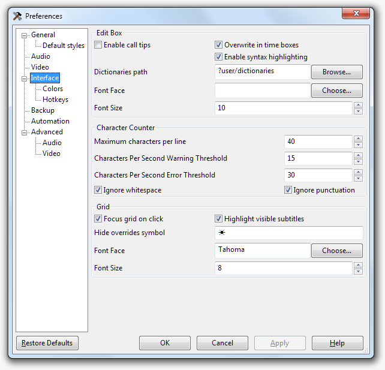
- 启用提示
- 当启用时，Aegisub将自动识别您打的特效标签，并显示一个这个标签的语法提示框，直至您闭合这个标签。这个功能叫做“语法提示”，和一些编程集成开发环境(IDE)的体验相似。
- 时间框内覆盖写入
- 控制这个程序里所有时间编辑框的行为。默认情况下，Aegisub的所有时间编辑框就像您按下Insert键一样，所以您输入的每个数字都会覆盖已经存在的数字，并且无法删除已存在的数字，您只能覆盖它们。取消这个选项来禁用这个功能，并让所有时间编辑框像（大部分）常规文本编辑框一样。
- 启用语法高亮
- 启用或禁用主编辑框特效标签的语法高亮功能。
- 字典文件路径
- 决定Aegisub将在哪里寻找拼写检查和同义词词典文件。默认会在
?data/dictionaries里找，但如果您在其他目录有自己的词典，您可以随意把它改为其他的目录。
- 字体
- 决定字幕编辑框和其他编辑框中文字的字体和字体大小。
- 每行最大字符数
- 如果字符计数器的数值高于这个数字，它的背景色会变为红色来提醒你已超过最大行的长度。行的长度并不会受到限制。
- 每秒字符数警告阈值
- 每秒字符数报错阈值
- 字/秒栏的背景颜色的开始出现警告颜色，和变为错误颜色的阈值。
- 忽略空格
- 如果启用，空格不会计入字符数。（译者注：全角空格启用后也会计入字符数。）
- 忽略标点符号
- 如果启用，标点符号格不会计入字符数。
- 单击激活编辑框
- 当启用时，字幕栏将变成程序独立的一个区域，并且可以像音频或视频框一样被激活，激活后就可以用方向键或鼠标滚轮来滚动字幕栏等等。相反，如果你禁用这个选项，焦点就会留在你之前点击过的栏。这意味着你不能在字幕栏使用键盘快捷键，但另一方面也意味着你可以用鼠标点到另一行而不会失去音频框的焦点（译者注：就是说你在字幕栏选取新的一行后，依然可以用qwert这些音频框的快捷键来播放相应音频）。自己根据情况来选择的吧。
- 突出可见字幕
- 当启用时，所有当前视频帧可见的（或只是 应该 可见的；Aegisub不能分辨像透明这样的情况，它只看时间轴）字幕行会在字幕栏里以特殊的背景色（参阅下面的“在当前帧显示的行背景色”选项）高亮出来。
- 隐藏特效标签
- 当隐藏标签开启时，将会代替特效标签区显示的字符。注意尽管只是符号，但如果你愿意的话，你可以使用不止一个字符。
- 字体
- Decides the font and font size of all text in the grid.
决定字幕栏显示的字体和字体大小。
颜色
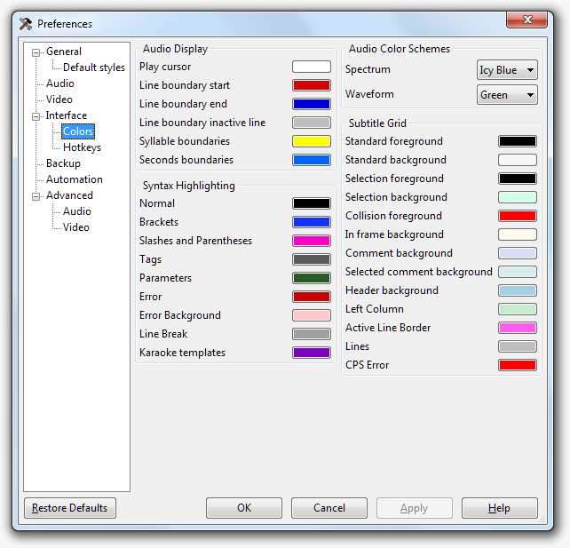
音频播放
- 播放游标
- 播放光标的颜色。
- 边线色 - 起始
- ：音频图中开始时间线的颜色。
- 边线色 - 结束
- ：音频图总结束时间线的颜色。
- 边线色 - 非活动行
- 音频图中非活动行的时间线颜色。
音节边线色
- 音频图中音节边缘时间线的颜色。
音频配色方案
为波形/频谱选择现有的颜色方案，并没有在Aegisub中直接添加本颜色方案的方法。如果你想试试更改，可以在config.json中修改。
语法高亮
- 正常
- 正常文字的颜色。
- 大括号
- ASS特效标签使用的闭合大括号的颜色。
- 斜杠和圆括号
- ASS特效标签中使用的斜杠和圆括号的颜色。
- 标签
- ASS特效标签本身的颜色。
- 参数
- ASS特效标签参数的颜色。
- 错误
- 指示无效表达式的颜色。
- 错误背景
- 指示错误的背景色。
- 换行符类
- \N, \n 和 \h 的颜色。
- 卡拉OK模板
- 卡拉OK模板部分的颜色。
字幕栏
- 普通行前景色
- 普通行背景色
- 在字幕栏中显示的颜色。前景色为文本颜色，背景色即为背景颜色。
- 选取行前景色
- 选取行背景色
- 在字幕栏中，已选择行的前景色和背景色。
- 注释行背景色
- 选中注释行背景色
- 文字表面含义。
- 冲突行前景色
- 和活动行时间重叠的行的前景色。
- 在当前帧显示的行背景色
- 文字表面含义。
- 表头背景色
- 左边栏颜色
- 活动行边框颜色
- 分隔线颜色
- 分隔字幕栏各个区块的分隔线颜色。
热键
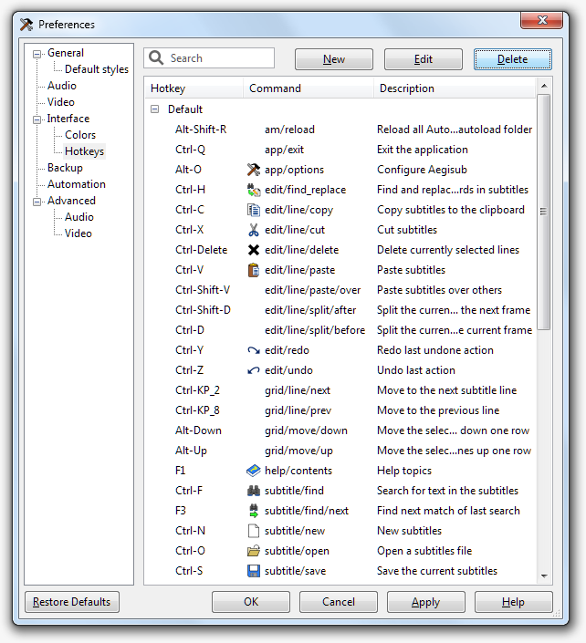
此页面列出当前Aegisub设置的所有热键（译者注：即快捷键），并允许你添加，删除或更改。
热键组
Aegisub supports setting different hotkeys depending on what part of the
program has focus.
The "Default" group is for hotkeys which should work regardless of what in
Aegisub currently has keyboard focus. Hotkeys set in Default are overridden by
the more specific categories when applicable.
The "Always" group sets hotkeys which are enabled by Medusa mode, which apply
everywhere in the program and override all other keypresses, including ordinary
typing in edit boxes.
All other hotkey contexts should be self-explanatory.
设置热键
To modify a hotkey, first click on the row to select it, then click on the
hotkey field in the row, then press the key(s) that should trigger the command.
Accept the new hotkey by clicking on another row.
To add a new hotkey, select the context you want to add the hotkey to, then
click the New button. Enter the command name, then set the hotkey
as when editing them.
译者注：由于一个Bug，3.2版本添加热键时需切换为英文界面再添加。新版本已修复了这个Bug。
备份
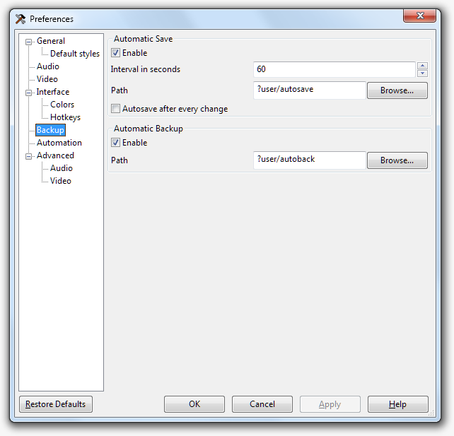
自动保存
- 启用
- 如果启用自动保存，Aegisub将每隔一段时间自动保存一份当前编辑的字幕文件副本到设定目录下。
- 保存间隔（秒）
- 设定两次自动保存的间隔时间。
- 保存路径
- 设定自动保存的字幕文件副本的存放位置。默认设定为
?user/autosave/
对于Windows 7系统。实际的默认路径为 %UserProfile%\AppData\Roaming\Aegisub\autosave
（对于其他系统，请参考Aegisub path specifiers ）
- 每次更改后自动保存
- 如果启用此设定，Aegisub将在每次更改后自动保存文件。
需要注意的是，目前此功能和'编辑'菜单的 '恢复' 功能存在一些冲突问题。
自动备份
- 启用
- 如果启用自动备份，Aegisub每打开一个字幕文件，都会为其自动备份一个副本到设定目录下。
- 保存路径
- 设定自动备份的字幕文件副本的存放位置。默认设定为
?user/autoback/
对于Windows 7系统。实际的默认路径为 %UserProfile%\AppData\Roaming\Aegisub\autoback
（对于其他系统，请参考Aegisub path specifiers ）
自动化
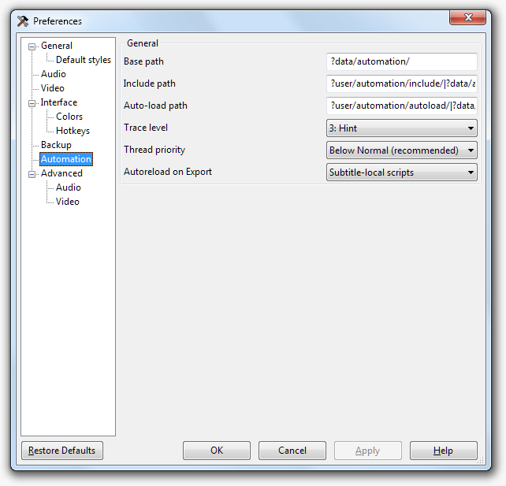
- 根路径
- A base directory where you put non-autoloaded automation scripts. Used only
for saving paths to script files in the subtitles.
- 包含(include)路径
- List of directories where include files and modules are searched for.
Directories are separated with a pipe character,
|.
- 自动载入路径
- List of directories that are searched for scripts on startup, which are then
automatically loaded. Directories are separated with a pipe character,
|.
- 跟踪等级
- When a script sends a message to the debug console it can also specify a
trace level. If the trace level of a message is lower than the value given
here, the message is not logged. The names given to the levels are only
suggestions and they don't have any effect on the execution of the script.
(i.e. a "Fatal" level message will not cause the script to terminate.)
- 线程优先级
- 译者注：3.x版没这个选项。
-
Priority given to the script execution thread. If you're on a
single-core/single-CPU system having this on lower than normal will make other
programs more responsive while long-running scripts are active.
- 自动重新载入导出
- Automatically reloads the specified sets of scripts when the Exporting
dialogue is opened. In that case you will have to enter the
Automation/Manager window and determine the cause of the error.
高级音频设置
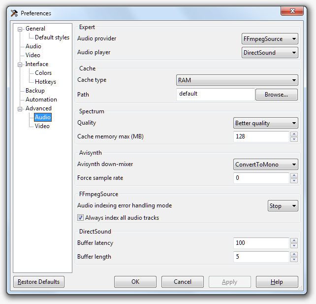
- 音频来自
- 选择使用何种后台处理方式来载入音频。目前提供两种可选方式。
- avisynth (仅限Windows)
- 使用 Avisynth 载入音频。
所有类型的文件都将会在Avisynth脚本中以DirectShowSource()方式被载入，但*.avs脚本文件会以Import()方式被载入。
译者注：如果你懂得编写AVS脚本的话，甚至可以使用LwlibavAudioSource()等五花八门的方式载入音频文件。
但如果你不懂如何写AVS，这个方式就不要考虑了。因为DirectShowSource()这种“高级”滤镜实在是和人品有关，
推荐还是用下面的FFMS2载入音频。
- FFmpegSource
- 使用 FFMS2 载入音频。
比使用DirectShowSource()方式载入更加可靠，但是载入速度相对会慢一些。缘于FFMS2需要先索引一遍媒体文件，通常这
会花费一些时间，时间长短视文件大小以及电脑性能而异。
值得注意的是，无论这里如何设置，对于WAV文件，PCM WAV Reader都将优先被使用。
- 音频播放器
- 使用何种方案来播放音频，选项因平台而异。
- DirectSound (仅限Windows)
- 使用“Microsoft DirectSound”来播放音频。这是目前广泛测试而又最稳定可靠的音频播放器。
- DirectSound-old (仅限Windows)
- 早期的Aegisub使用的“DirectSound”播放器。
如果你在使用上面的播放器时出现了人品问题，也许可以试试这个（祝你好运）。
- alsa (仅限Linux)
- 使用Advanced Linux Sound Architecture来播放音频。
ALSA是Linux系统的原生音频架构并且它无法在其他任何系统上使用。
- pulse (仅限Linux和其他“类UNIX”系统, eg: FreeBSD、OpenBSD)
- 通过一个PulseAudio声音服务器来播放音频。
这是最缺乏测试而又很可能无法正常工作的音频播放器，因此仅推荐那些讨厌non-pulse播放器的人使用。
- portaudio
- 调用PortAudio的API来播放音频。
PortAudio在不同平台上拥有不同的音频播放解决方案。在绝大多数的类UNIX系统上使用Open Sound System (OSS)
来输出音频。它也是当今在Windows系统上唯一支持选择输出设备的音频播放器。
- openal
- 调用OpenAL的API来播放音频。
这是在OS X系统上的推荐方案。但OpenAL通常不会随Windows安装时自带，因为它会让巨硬觉得不爽。
缓存
- 缓存类型
- 推荐选择内存，如果你的计算机安装内存十分小，那么就选择硬盘吧。
值得注意的是，打开PCM WAV文件时不需要使用任何缓存！但如果你关闭缓存的话，音频播放可能会变得极不稳定！
- 缓存路径
- 缓存文件名
- 这些选项决定硬盘上的音频缓存的存储位置。仅缓存类型设置为“硬盘”的情况下生效。
在硬盘空间充足的情况下切勿更改这些设置。对于缓存文件名来说，它应该满足C语言的输出风格即"%i"形参，
形参会被一个数字所取代。"%02i"就是默认值。千万不要随意修改这些设定，除非您清楚的知道您在干什么。
译者注：对于缓存文件命名，个人翻译的也不是很到位，不理解的看下面原文吧，要是原文也看不懂= =。那就不要改这个了2333
“ For the name, the string expects a printf-style "%i" parameter, that will be replaced with a number. "%02i" is used
by default. Don't change that unless you know what you are doing. ”
频谱模式
- 质量
- 设定显示频谱的质量。越高质量等级的设定会导致越高的CPU和内存占用。
每提高一个等级的设定，CPU占用会略微提高，内存占用则会达到上一等级的两倍。
对于采样率48KHz、时长1分钟的音频来说，不同质量等级的设定占用的内存如下表。
| 0 "一般质量" | 11 MB |
|---|
| 1 "较好质量" | 22 MB |
|---|
| 2 "高质量" | 44 MB |
|---|
| 3 "极高质量" | 88 MB |
</table>
值得注意的是，内存的占用量和音频的声道数以及位深无关。
因为Aegisub一直工作在转换后的单声道模式下，并且频谱也是一直以32位浮点精度计算的。
|---|
- 缓存最大容量
- 设定频谱缓存所占用的最大内存数量。
已计算好的频谱会被缓存到内存中，以保证滚动频谱时不发生卡顿。
并且能缓存的频谱长度，在一定量的缓存限制下，是与频谱的质量等级设定有关的。
以48Khz采样率的音频为例，在频谱质量设定为“较好质量”的情况下，默认的128M缓存约能缓存六分钟的频谱。
但需要注意的是，如果你的缓存设置小于5MB，则Aegisub会自动套用默认的缓存大小（128M）。
建议最大缓存容量不要超过你电脑安装物理内存的四分之一。
（当然也不要超过32位程序所能使用的3GB内存上限，如果你使用的是64位Aegisub，请无视这条。但不推荐使用64位Aegisub，BUG很多）
Avisynth (仅限Windows)
- Avisynth down-mixer（声道混合/提取）
- Aegisub仅能使用单声道音频。这个选项设定Avisynth如何将音频转换为单声道。
ConvertToMomo：将立体声或多声道重新混合成单声道。
GetLeftChannel：仅提取左声道。
GetRightChannel：仅提取右声道。
- 强制采样率
- 强制转换所有被打开的音频采样率为给定值。默认0则不做转换。
若使用硬件声卡完成这一转换，则可潜在提升音频表现力以及修复一些播放问题。
（原作者说软件播放器转换不行。这玄学吗？）
FFmpegSource
- 音频索引错误处理模式
- 若索引音频时出现错误，则有下面几种处理模式可选~
- 忽略
- 忽略错误并且继续解码文件。这个模式可以让你打开一些受损的媒体文件，但可能导致音画不同步。
- 清除
- 假设媒体文件中不存在这条有错误的音轨。
- 停止 (默认值)
- 停止索引文件并且返回错误发生前的所有正常音轨数据。这是Aegisub的默认值，因为在音轨末端遭遇到受损的音频数据是很常见的。
（笔者表示貌似不常见 QAQ ）
- 取消
- 直接取消打开整个媒体文件。
- 总是索引所有音轨
- 一旦禁用，打开视频文件只会索引视频轨道，音轨文件则还需要手动再载入一次。
Portaudio
- Portaudio 设备
- 当使用PortAudio输出音频时可在这里选择输出音频的设备。
高级视频设置
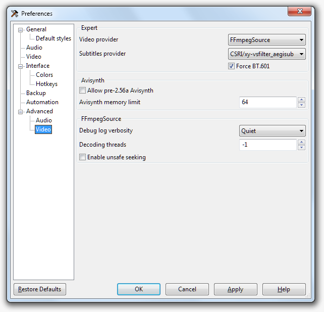
- 视频来自
- 使用何种方式来载入视频。可用选项取决于你安装的Aegisub版本和运行Aegisub的平台。
视实际情况可能存在以下选项：
- avisynth (仅限Windows)
- 使用Avisynth来载入视频。
Avisynth支持载入绝大多数常见格式的媒体以及.d2v文件（注：d2v文件是DVD VOB媒体文件的索引文件，
但对.d2v文件的支持需要正确安装相关Avisynth源滤镜，即DGSource）。
需要注意的是Aegisub可以使用独立于系统安装的Avisynth。
最后提醒一句：若使用Avisynth载入视讯，则只推荐载入*.avi *.d2v *.avs文件以获(fang)得(zhi)最(ren)佳(pin)体(wen)验(ti)。
当然，如果你会编写AVS脚本，就当上面是一堆废话吧~(=・ω・=)
同样的，如果你不明觉厉的话，请下移目光↓
- FFmpegSource
- 使用FFMS2来载入视频。
如果你看不懂上面在说些什么，那么FFMS2就是你最好的选择。它支持绝大多数常见视频格式并且通常极为可靠。
但对于较大的媒体文件可能会花费几十秒乃至几分钟的索引时间。
- 字幕来自
- 选择使用何种方式来渲染字幕。
如果你自行安装了其他的CSRI字幕渲染器，例如 VSFilterMod 或 xy-VSFilter，则它们都会自动出现在可选列表中。
（安装这两种渲染器只需要把其对应的DLL文件放入Aegisub安装目录下的CSRI目录内即可）
- CSRI/vsfilter_textsub (仅限Windows)
- 使用VSFilter 2.40来渲染字幕。这是Aegisub针对ASS格式字幕文件使用的标准渲染器。
- libass
- 使用libass来渲染字幕。
libass渲染速度远快于VSFilter，并且libass一定程度上可以跨平台使用。
它和VSFilter的渲染方式有些不同，但不幸的是，libass在Windows平台上有一些已知的字体渲染BUG。
鉴于越来越多的人开始使用libass，如果你在制作复杂的软字幕，那么最好同时用libass和VSFilter检查一下你的字幕渲染情况。
- 强制BT.601
- 由于VSFilter的兼容性问题，假定所有YUV色彩格式输入的的视频均为BT.601色域。
当VSFilter被用作播放器的DirectShow字幕滤镜时，VSFilter总默认将渲染好的字幕从RGB色彩格式转换为BT.601色域的YUV格式。
这意味着如果视频是BT.709色域（实际上绝大多数高清视频和少数DVD就是这种色域），
那么你在Aegisub中看到的情形将和在播放器中看到情形不一致。
（例如在Aeg娘中做好的与视频色彩匹配的字幕，而在播放器中的外挂字幕色彩就会出现偏差）
这个选项强制Aeg娘将所有载入的YUV色彩格式视频假定为BT.601色域并做YUV BT.601 -> RGB的转换，
虽然这可能导致不正确的的色彩显示，但能保证你在Aegisub中看到的效果和在播放器中看到的效果相同。
译者注：Aeg娘里显示的视频都是转换后的RGB格式。字幕也是在RGB模式下渲染后直接输出到视频上的。
更有趣的是，当VSFilter作为MPC-HC的内置字幕渲染器时，VSFilter就会使用“正确的”色域，
在这种情况下，结果却会产生与预期“不匹配的”色彩。
（因为VSFilter仅以BT.601色域为目标进行RGB渲染，但此时的RGB ->YUV转换是以正确的BT.709色域转换的，
可惜的是RGB -> YUV 这个过程在MPC-HC里并不是由VSFilter完成的，所以会出现颜色偏差）
这都是因为ISR目前打破了很多老规矩（例如：目前不可能用它精准的定位字幕），我们建议目前不必为这事担心。
（毕竟也操不上心233）
也许下面的图片对比能帮助你理解的更清楚。
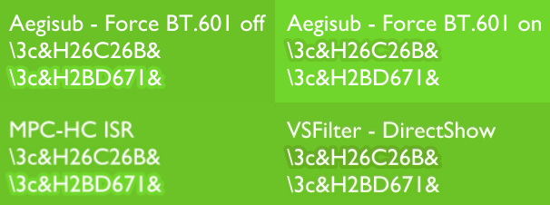
Aegisub现已在生成的字幕文件中注明了DirectShow时应该使用的色域来进行的RGB -> YUV转换，
希望以后能依靠字幕渲染器的改进来解决这个烂摊子。
最后带点译者的话：
VSFilter只以BT.601做RGB <-> YUV转换，当VSFilter被用作播放器的DirectShow字幕滤镜渲染时，
字幕那一块的视频图像会被单独切出来以BT.601做YUV -> RGB的转换，然后在RGB下渲染字幕，
渲染完成后再同样以BT.601做RGB -> YUV的转换，随后将这块图像拼回原视频中。
可见如果视频是BT.709色域。这样就会带来色彩偏差。
而Force BT.601正是让BT.709的视频在Aeg娘里以“错误”的方式被从YUV转换成RGB，然后做RGB取样得到字幕颜色。
最终在播放器DirectShow的字幕也是以RGB渲染后，再转回“错误”的YUV BT.601。
而这个错误的方式就是“Force BT.601”，或者我称为“Pretend BT.601”，
这个设定只是以BT.601的规范对视频进行了YUV -> RGB转换，最终字幕渲染完成后再RGB -> YUV正好还原到了Pretend BT.601的视频。
此时的“Pretend BT.601”其实就是真正的BT.709。
如此便保证了你在Aeg娘里设定的字幕匹配色在播放器里也是匹配的。
Original Text For Reference：
Force BT.601
Pretend all YUV videos are BT.601, for VSFilter compatibility.
When VSFilter is used as a DirectShow filter, it always uses the BT.601 color matrix for converting the subtitles
from RGB to YUV. This means that if the video uses BT.709 (as most HD video and the occasional DVD does), colors
which match the video in Aegisub will not match the video in the player. This option makes Aegisub always convert
videos to RGB using BT.601, making the colors shown in Aegisub incorrect, but making it so that if the colors match
in Aegisub, they will match in the player.
To make things more exciting, VSFilter will use the correct color space when used as the internal subtitle renderer
in MPC-HC, so enabling this option will result in mismatched colors in that case. As the ISR is currently broken in
many ways (e.g. it is impossible to accurately position subtitles with it), we recommend not worrying about it for now.
Avisynth
- 允许pre-2.56a Avisynth（允许使用旧版本的Avisynth）
- 支持使用2.56a前的老版本的Avisynth，因为有些人的信仰难以动摇。
- Avisynth 内存限额
- 设定Avisynth能够使用最大内存。
通常增加内存缓存大小并不能加快处理速度，除非你直接载入了非常复杂的AVS脚本。
（例如：载入了一个带有EP降噪滤镜或是Contra sharp滤镜的AVS脚本，
在没有足够内存加速处理的情况下，会非常卡，建议载入的AVS脚本不要过于复杂。）
FFmpegSource
- Debug日志的详细级别
- 设定ffmpeg/libav的日志详细级别。此选项仅在你对Aegisub启用调试器时才有设定价值。
- 解码线程
- 设定用于解码视频的最多线程数，-1 意味着自动选择。
如果你在解码视频时碰到了意外问题，将其设置为 1 也许能解决一些解码问题。但这也会牺牲一定的解码速度。
通常不推荐 -1 和 1 以外的设定值。
- 允许可能不安全的定位
- 启用此选项会禁用一些FFMS2对于媒体文件的完整性检查。
在某些情况下有可能借此打开一些FFMS2原本因帧定位问题而无法打开的媒体文件。但通常不建议开启。